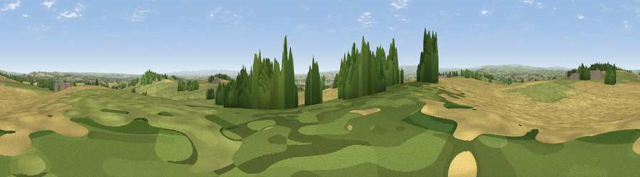

Viewpoint near Shildon
#13583 in England · top 27% of its area beats it · near ShildonThe view, rendered

A 360° render of this exact spot computed from the terrain model, tree cover and land cover — summer colours, afternoon light, calibrated against photographs of famous viewpoints. Real trees, hedges and buildings will differ in detail.
The panorama
Grey silhouette: terrain skyline in each direction (720 bearings, Earth curvature and refraction included). Dashed green: skyline with trees (+15 m) and buildings (+8 m) as obstacles. Blue strip: how far the ground is visible on each bearing.
Where the view opens
Wedge length = distance to the farthest visible ground on that bearing (vegetation-aware). Rings at 10, 25 and 50 km.
What fills the view
49% cropland · 38% grassland · 10% woodland · 3% built-up
Angular shares of the visible panorama (visual magnitude), not map area. Landscape diversity 0.46 (0–1 Shannon).
Key numbers
More beautiful places nearby
The staircase of upgrades: each row has a higher view potential than everything closer. Driving times are estimates from straight-line distance, calibrated against real road routing — check an actual route before setting out.
| Place | Direction | Drive | Score |
|---|---|---|---|
| Viewpoint near Shildon | NNW · 1 km | ~3 min | 64.0 |
| Viewpoint near St Helen Auckland | NNW · 2 km | ~5 min | 64.1 |
| Viewpoint near St Helen Auckland | NNW · 2 km | ~6 min | 70.3 |
| Viewpoint near Gilling West | SSW · 19 km | ~32 min | 72.3 |
| Viewpoint near Quarrington Hill | NE · 19 km | ~33 min | 73.1 |
| Viewpoint near Eggleston | W · 20 km | ~33 min | 76.0 |
| Pontop Pike | NNW · 30 km | ~48 min | 77.8 |
| Viewpoint near Newton Under Roseberry | ESE · 34 km | ~52 min | 78.3 |
54.60241, -1.67451 · source: screening · position refined by local search. Computed location — check access rights before visiting.